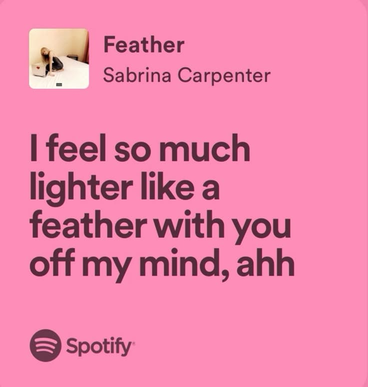
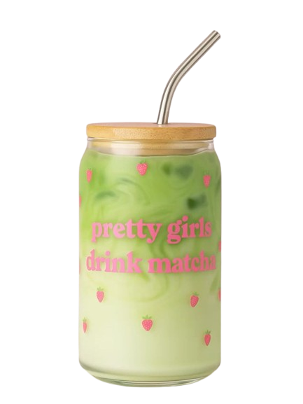
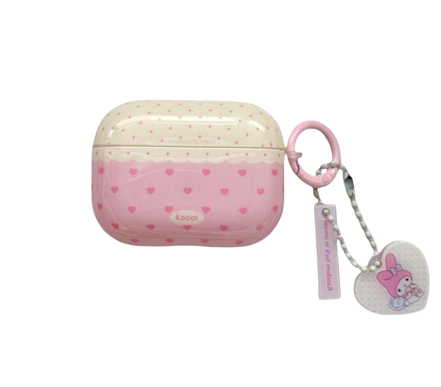

Hello, Im Her!
created by @mln.hdytllh_

so, what's in
my tincase?
Loving you feels like standing at the edge of a dream — terrifying, beautiful, and impossible to step away from.


Back to Page 2
★ EVERYTHING